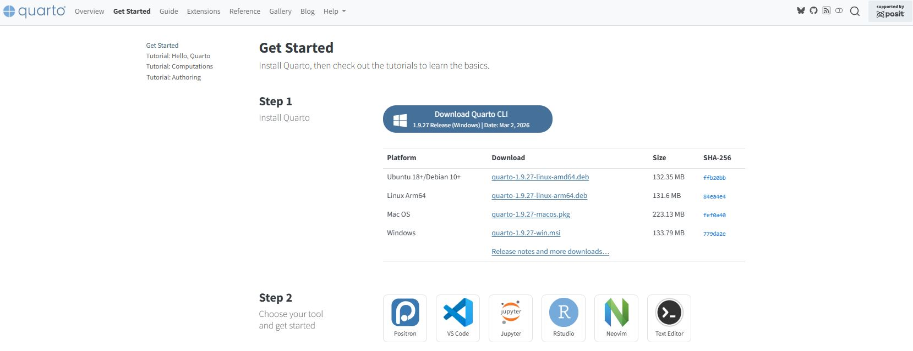
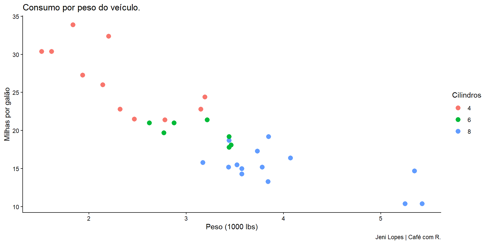

Aula 13. R e Python para começar em dados
Como aprender as duas linguagens com clareza e estratégia?
Democratização
Esta aula foi pensada para quem está no início da jornada em dados e quer tomar decisões de aprendizado com consciência, não com pressa.

Acompanhe o café com R
Onde criei essa aula?
No quarto - acesse aqui.
No R - acesse aqui.
No RStudio - acesse aqui.

Objetivos da apresentação
- Entender o papel de
RePythonno contexto de dados - Comparar as linguagens com critérios técnicos e práticos
- Definir uma estratégia de aprendizado por perfil
- Conhecer os primeiros pacotes e recursos de cada linguagem
- Construir uma base sólida antes de avançar
O contexto: por que aprender a programar para dados?
Dados estão em todo lugar
A capacidade de coletar, transformar e comunicar dados se tornou uma competência fundamental em praticamente todas as áreas do conhecimento.
- Ciências exatas, humanas e biológicas utilizam dados em seus processos
- O mercado de trabalho valoriza profissionais que automatizam análises
- Planilhas não escalam - código escala
- Reprodutibilidade é um requisito em ciência e em negócios
Por que não basta Excel?
- Excel não é auditável: cada clique é invisível
- Não suporta grandes volumes de dados com eficiência
- Dificuldade de colaboração e versionamento
- Automatização limitada e frágil
- Não integra com bancos de dados, APIs ou modelos estatísticos
Note
Excel é uma ferramenta legítima para exploração inicial. O problema é quando ele se torna o único instrumento de análise.
R e Python: linguagens de propósito analítico
Ambas foram desenvolvidas com foco em análise de dados, estatística e computação científica.
- R: criada por estatísticos, para estatísticos
- Python: criada para legibilidade e uso geral, adotada fortemente por cientistas de dados
- Ambas são gratuitas, de código aberto e com comunidades ativas
Entendendo as linguagens
O que é R?
R é uma linguagem e ambiente de computação estatística criada por Ross Ihaka e Robert Gentleman na Universidade de Auckland, em 1993.
- Focada em análise estatística e visualização
- Sintaxe projetada para trabalhar com dados tabulares
- Ecosistema do Tidyverse: coerente, legível e poderoso
- Forte presença em pesquisa acadêmica, epidemiologia, econometria e ciências sociais
O que é Python?
Python é uma linguagem de programação de propósito geral criada por Guido van Rossum em 1991, com filosofia de legibilidade e simplicidade.
- Amplamente adotada em ciência de dados, machine learning e automação
- Sintaxe próxima da linguagem natural
- Ecosistema com pandas, NumPy, scikit-learn, TensorFlow
- Forte presença na indústria, startups e engenharia de dados
R x Python - visão geral minha opinião
| Dimensão | R | Python |
|---|---|---|
| Origem | Estatística acadêmica | Programação geral |
| Ponto forte principal | Análise estatística | Machine learning e automação |
| Curva de aprendizado | Moderada para dados tabulares | Moderada com sintaxe mais direta |
| Visualização nativa | ggplot2 - expressivo e elegante | matplotlib e seaborn |
| Comunidade acadêmica | Muito forte | Crescente |
R x Python - aplicações minha opinião
| Área | R | Python |
|---|---|---|
| Estatística inferencial | Excelente | Bom |
| Visualização de dados | Excelente | Muito bom |
| Machine learning | Bom | Excelente |
| Deep learning | Limitado | Excelente |
| Web scraping | Bom | Excelente |
| Automação de processos | Limitado | Excelente |
| Relatórios e documentos | Excelente | Bom |
| Manipulação de dados | Excelente | Excelente |
Qual aprender primeiro?
Não existe resposta universal
A escolha depende de três fatores principais:
- Objetivo profissional ou acadêmico
- Área de atuação ou interesse
- Contexto da equipe ou da instituição
Recomendação
Defina sua área antes de escolher a linguagem. A linguagem é um instrumento - o problema que você quer resolver é o ponto de partida.
Perfil 1 - Pesquisa e academia
Se o objetivo é análise estatística, publicação científica ou trabalho com dados observacionais:
- Comece com R
- O Tidyverse oferece uma gramática coerente para análise de dados
- ggplot2 é a ferramenta de visualização mais expressiva disponível
- R Markdown e Quarto integram código, texto e resultados em documentos reproduzíveis
- A comunidade acadêmica é ampla e os pacotes são especializados
Perfil 2 - Mercado e indústria
Se o objetivo é trabalhar com engenharia de dados, machine learning aplicado ou automação:
- Comece com Python
- A demanda por Python no mercado de trabalho é mais ampla
- A integração com sistemas, APIs e bancos de dados é mais natural
- scikit-learn, TensorFlow e PyTorch são referências em machine learning
- A curva de aprendizado é suave para quem está começando do zero
Perfil 3 - Análise de dados generalista
Se o objetivo é explorar dados, gerar relatórios e apoiar decisões em diferentes contextos:
- As duas linguagens se complementam
- R para análise exploratória, visualização e estatística
- Python para automação, coleta e modelagem
- O pacote Reticulate permite integrar as duas no mesmo projeto
- A combinação é um diferencial real no mercado
Tem aula aqui no site

Aula 9. Integração R x Python com pacote Reticulate.
Note
Consulte os slides anteriores para detalhes sobre o pacote Reticulate. Link aqui.
Começando com R
O ambiente de trabalho em R
Para iniciar com R, três ferramentas são necessárias:
- R - o motor da linguagem: cran.r-project.org
- RStudio - interface de desenvolvimento: posit.co/download/rstudio-desktop
- Quarto - sistema de publicação: quarto.org
Primeiros passos no R
Dica
No R, o operador de atribuição padrão é <-. O atalho no teclado é Alt + - no RStudio.
Vetores: a estrutura fundamental do R
# Criando vetores
idades <- c(22, 35, 28, 41, 19)
nomes <- c("Jeny", "Meguy", "Carla", "Diego", "Elisa")
aprovado <- c(TRUE, FALSE, TRUE, TRUE, FALSE)
# Operações vetorizadas - o R opera em todos os elementos
idades * 2
idades > 25
# Acessando elementos por índice
nomes[1] # primeiro elemento
idades[3:5] # do terceiro ao quintoData frames: tabelas no R
O Tidyverse: ecosistema para análise de dados

O Tidyverse: ecosistema para análise de dados
O Tidyverse é uma coleção de pacotes com uma filosofia comum: dados organizados, código legível e consistência entre funções.
- dplyr - manipulação de dados com verbos claros
- ggplot2 - visualização por camadas (Grammar of Graphics)
- tidyr - organização e transformação da estrutura dos dados
- readr - importação de arquivos CSV e delimitados
- stringr - manipulação de texto
Instalando e carregando o Tidyverse
Primeiros passos com dplyr
Encadeamento com pipe
library(dplyr)
# Múltiplas operações encadeadas com pipe nativo |>
resumo <- mtcars |>
filter(cyl %in% c(4, 6)) |>
select(mpg, cyl, hp, wt) |>
mutate(eficiencia = mpg / wt) |>
group_by(cyl) |>
summarise(
media_mpg = mean(mpg),
media_eficiencia = mean(eficiencia),
n_veiculos = n()) |>
arrange(desc(media_mpg))
resumoPrimeira visualização com ggplot2
library(ggplot2)
# Gráfico de dispersão
grafico1 <- ggplot(
data = mtcars,
aes(x = wt, y = mpg, color = factor(cyl))) +
geom_point(size = 3) +
labs(
title = "Consumo por peso do veículo.",
x = "Peso (1000 lbs)",
y = "Milhas por galão",
color = "Cilindros",
caption = "Jeni Lopes | Café com R.") +
theme_classic()Primeira visualização com ggplot2

Lendo dados externos no R
library(readr)
# Lendo CSV local
dados_local <- read_csv("dados/meu_arquivo.csv")
# Lendo CSV de URL
url <- "https://raw.githubusercontent.com/datasets/population/main/data/population.csv"
dados_url <- read_csv(url)
# Lendo Excel
library(readxl)
dados_excel <- read_excel("dados/planilha.xlsx", sheet = 1)
# Visualizando a estrutura
glimpse(dados_local)Começando com Python
O ambiente de trabalho em Python
Para iniciar com Python para dados, três componentes são recomendados:
- Python - o interpretador: python.org/downloads
- VS Code ou JupyterLab - ambientes de desenvolvimento
- pip ou conda - gerenciadores de pacotes
Alternativa para iniciantes
O Google Colab permite usar Python no navegador sem instalar nada. É ideal para quem está começando e quer focar no aprendizado da linguagem.
Primeiros passos em Python
Note
Em Python, o operador de atribuição é =. f-strings (f”…“) permitem inserir variáveis diretamente dentro de texto.
Listas: estrutura básica em Python
# Criando listas
idades = [22, 35, 28, 41, 19]
nomes = ["Jeny", "Meguy", "Carla", "Diego", "Elisa"]
# Acessando elementos - índice começa em 0
print(nomes[0]) # primeiro elemento
print(idades[2:5]) # do terceiro ao quinto
# Adicionando elementos
nomes.append("Fernanda")
# Iterando
for nome in nomes:
print(nome)NumPy: operações numéricas
import numpy as np
# Arrays NumPy - mais eficientes que listas para cálculos
idades = np.array([22, 35, 28, 41, 19])
# Operações vetorizadas
print(idades * 2)
print(idades > 25)
# Estatísticas descritivas
print(f"Média: {idades.mean():.1f}")
print(f"Desvio padrão: {idades.std():.1f}")
print(f"Mínimo: {idades.min()} | Máximo: {idades.max()}")pandas: o coração da análise em Python
O pandas é o pacote central para análise de dados tabulares em Python. Sua estrutura principal, o DataFrame, é equivalente a uma tabela.
- Leitura de CSV, Excel, JSON, SQL e outros formatos
- Seleção, filtragem e transformação de colunas
- Agrupamento e sumarização de dados
- Tratamento de valores ausentes
- Integração nativa com NumPy e matplotlib
Primeiros passos com pandas
Manipulação de dados com pandas
import pandas as pd
# Carregando dados
df = pd.read_csv("https://raw.githubusercontent.com/mwaskom/seaborn-data/master/tips.csv")
# Filtrando linhas
jantar = df[df["time"] == "Dinner"]
# Selecionando colunas
colunas = df[["total_bill", "tip", "size"]]
# Criando coluna calculada
df["percentual_gorjeta"] = (df["tip"] / df["total_bill"]) * 100
# Agrupamento e resumo
df.groupby("day")["tip"].mean().round(2)Visualização com matplotlib e seaborn
import matplotlib.pyplot as plt
import seaborn as sns
# Carregando dataset de exemplo
tips = sns.load_dataset("tips")
# Gráfico de dispersão com seaborn
sns.scatterplot(
data = tips,
x = "total_bill",
y = "tip",
hue = "day")
plt.title("Gorjeta por valor total da conta")
plt.xlabel("Valor total (USD)")
plt.ylabel("Gorjeta (USD)")
plt.tight_layout()
plt.show()Lendo dados externos em Python
import pandas as pd
# Lendo CSV local
dados_local = pd.read_csv("dados/meu_arquivo.csv")
# Lendo CSV de URL
url = "https://raw.githubusercontent.com/datasets/population/main/data/population.csv"
dados_url = pd.read_csv(url)
# Lendo Excel
dados_excel = pd.read_excel("dados/planilha.xlsx", sheet_name=0)
# Visualizando a estrutura
print(dados_local.shape)
print(dados_local.head())
print(dados_local.info())Comparando as sintaxes
Carregar e visualizar dados
| Operação | R | Python |
|---|---|---|
| Ler CSV | read_csv("arquivo.csv") |
pd.read_csv("arquivo.csv") |
| Ver primeiras linhas | head(df) |
df.head() |
| Estrutura dos dados | str(df) |
df.info() |
| Resumo estatístico | summary(df) |
df.describe() |
| Dimensões | dim(df) |
df.shape |
Filtrar e selecionar
| Operação | R (dplyr) | Python (pandas) |
|---|---|---|
| Filtrar linhas | filter(df, col > 5) |
df[df["col"] > 5] |
| Selecionar colunas | select(df, col1, col2) |
df[["col1", "col2"]] |
| Criar coluna | mutate(df, nova = a + b) |
df["nova"] = df["a"] + df["b"] |
| Renomear coluna | rename(df, novo = antigo) |
df.rename(columns={"antigo": "novo"}) |
Agrupar e resumir
| Operação | R (dplyr) | Python (pandas) |
|---|---|---|
| Agrupar e calcular | group_by(df, grupo) |> summarise(media = mean(val)) |
df.groupby("grupo")["val"].mean() |
| Ordenar | arrange(df, col) |
df.sort_values("col") |
| Remover duplicatas | distinct(df) |
df.drop_duplicates() |
| Remover NA | drop_na(df) |
df.dropna() |
Erros comuns de quem está começando
Erros conceituais
- Tentar aprender as duas linguagens ao mesmo tempo, do zero - escolha uma, domine o essencial, depois avance para a outra
- Copiar código sem entender o que ele faz - o aprendizado está na leitura e modificação deliberada
- Pular direto para machine learning - sem base em manipulação e visualização, o machine learning não sustenta
- Evitar os erros - erros de código são parte indispensável do processo de aprendizado
Erros técnicos em R
# ERRO: objeto não encontrado
# print(resultado) # resultado não foi criado ainda
# ERRO: índice fora do limite
# vetor <- c(1, 2, 3)
# vetor[5] # retorna NA, não erro - cuidado com silêncio
# ERRO: tipo incompatível
# "10" + 5 # não funciona - string + numero
# CORRETO: converter antes de operar
as.numeric("10") + 5
# ERRO: pacote não carregado
# filter(dados, nota > 7) # precisa do library(dplyr)Erros técnicos em Python
# ERRO: índice começa em 0, não em 1
lista = ["a", "b", "c"]
# lista[3] # IndexError: list index out of range
lista[2] # correto - terceiro elemento
# ERRO: indentação obrigatória em Python
# if x > 5:
# print("maior") # IndentationError
# CORRETO:
if x > 5:
print("maior") # indentação com 4 espaços
# ERRO: pacote não importado
# df = pd.DataFrame() # NameError: pd not defined
import pandas as pd # importar antes de usarErros de processo
- Não versionar o código - use Git desde o início, mesmo em projetos pessoais
- Não documentar o que o código faz - comentários são para o seu futuro eu
- Trabalhar sem projeto organizado - separe dados brutos, scripts e saídas em pastas distintas
- Não salvar resultados intermediários - ao processar dados pesados, salve etapas parciais
Warning
Um script sem comentários é um script que você não vai entender em três meses.
Estratégia de aprendizado
Estrutura recomendada - fase 1
A primeira fase de aprendizado deve cobrir os fundamentos da linguagem escolhida.
- Tipos de dados e estruturas básicas
- Operações e controle de fluxo
- Funções: criar, chamar, entender parâmetros
- Importação e exportação de arquivos
- Manipulação básica de tabelas
Estrutura recomendada - fase 2
A segunda fase, deve focar em análise exploratória e visualização.
- Limpeza de dados: valores ausentes, duplicatas, tipos incorretos
- Transformações: filtrar, agrupar, calcular
- Visualização: gráficos de barras, dispersão, linha e histograma
- Comunicação de resultados com relatórios reproduzíveis
- Projetos com dados reais e públicos
Estrutura recomendada - fase 3
A terceira fase aprofunda técnicas e expande o repertório.
- Estatística descritiva e inferencial
- Modelagem: regressão linear, logística, árvores
- Web scraping e consumo de APIs
- SQL para acesso a bancos de dados
- Integração entre linguagens e ferramentas
Referência
A fase 3 é o ponto em que aprender a segunda linguagem passa a fazer ainda mais sentido.
Recursos para aprender R
- R for Data Science - Hadley Wickham e Garrett Grolemund: r4ds.hadley.nz
- Hands-On Programming with R - Garrett Grolemund: gratuito online
- Tidyverse documentation: tidyverse.org
- CRAN Task Views: lista de pacotes por área temática
- Posit Community: fórum oficial com alta qualidade de resposta
- Café com R: este projeto
Recursos para aprender Python
- Python for Data Analysis - Wes McKinney (criador do pandas): referência principal
- pandas documentation: pandas.pydata.org/docs
- Kaggle Learn: cursos gratuitos e práticos com notebooks
- Google Colab: ambiente gratuito para praticar no navegador
- Real Python: artigos técnicos de alta qualidade
- NumPy documentation: numpy.org/doc
Onde praticar com dados reais
- TidyTuesday (R) – desafios semanais com dados públicos:
https://github.com/rfordatascience/tidytuesday - Kaggle Datasets – repositório com milhares de conjuntos de dados:
https://www.kaggle.com/datasets - IBGE x SIDRA – dados brasileiros sobre população, economia e território:
https://www.ibge.gov.br
https://sidra.ibge.gov.br - Portal da Transparência – dados governamentais abertos do Brasil:
https://portaldatransparencia.gov.br
Boas práticas desde o início
Organização de projetos
projeto_dados/
├── dados/
│ ├── brutos/ # dados originais - nunca modificar
│ └── processados/ # resultados de limpeza e transformação
├── scripts/
│ ├── 01_importacao.R
│ ├── 02_limpeza.R
│ └── 03_analise.R
├── outputs/
│ ├── graficos/
│ └── tabelas/
├── relatorio.qmd
└── README.mdNomeação de arquivos e objetos
- Use nomes descritivos:
dados_populacao_2023é melhor quedf1 - Prefira letras minúsculas e underscore:
taxa_desemprego - Numere scripts em ordem de execução:
01_,02_,03_ - Nunca use acentos ou espaços em nomes de arquivos
- Seja consistente: escolha uma convenção e mantenha
Note
Em R, a convenção mais comum é snake_case. Em Python, a mesma convenção é recomendada pelo PEP 8, o guia de estilo oficial.
Versionamento com Git
- Git registra o histórico completo de alterações no código
- GitHub ou GitLab são plataformas para armazenar e compartilhar repositórios
- Use desde o primeiro projeto, mesmo que simples
- Commits frequentes com mensagens descritivas
.gitignorepara excluir dados sensíveis e arquivos temporários
Comando básico
git init cria um repositório local. git add . e git commit -m "mensagem" registram as alterações.
Código limpo e comentado
# -------------------------------------------------------
# Script: Análise de notas por turma
# Autor: Nome do analista
# Data: 2026-01-15
# Objetivo: calcular média, mediana e distribuição de notas
# -------------------------------------------------------
library(dplyr)
library(ggplot2)
# Importando dados brutos
notas <- read_csv("dados/brutos/notas_turma_a.csv")
# Removendo registros sem nota registrada
notas_validas <- notas |>
filter(!is.na(nota))
# Calculando estatísticas por disciplina
resumo <- notas_validas |>
group_by(disciplina) |>
summarise(
media = mean(nota),
mediana = median(nota),
n = n())Conexão com o mercado
O que o mercado espera de quem começa?
- Capacidade de importar, limpar e transformar dados sem auxílio de ferramentas visuais
- Produzir análises exploratórias com código reproduzível
- Comunicar resultados de forma clara - tabelas, gráficos, relatórios
- Trabalhar com dados reais: inconsistências, ausências, formatos variados
- Versionamento e organização de projetos
Construindo portfólio desde o início
- Publique projetos no GitHub com
README.mdclaro - Use dados públicos e brasileiros - isso demonstra contexto
- Documente as decisões de análise, não apenas o código
- Prefira projetos simples e bem explicados a projetos complexos e confusos
- Contribua com comunidades: TidyTuesday, fóruns, grupos no LinkedIn
Note
Um repositório com três projetos bem documentados vale mais que dez notebooks incompletos.
Resumo e próximos passos
O que vimos nesta aula
- R e Python são linguagens complementares, não concorrentes
- A escolha inicial depende do objetivo e da área de atuação
- Ambas possuem ecossistemas maduros para análise de dados
- A sintaxe é diferente, mas os conceitos subjacentes são os mesmos
- Boas práticas de código e organização devem começar do primeiro dia
Próximos passos recomendados
- Instalar R + RStudio ou Python + VS Code (ou usar Google Colab)
- Executar os primeiros códigos desta aula em sua máquina
- Escolher um dataset público e fazer uma análise exploratória simples
- Criar um repositório no GitHub e publicar o primeiro projeto
- Seguir a trilha de aprendizado indicada na fase 1
Use R e Python no Positron
O Positron é uma IDE (Ambiente de Desenvolvimento Integrado) de última geração desenvolvida pela Posit, voltada para ciência de dados em Python e R.
Acesse os materiais do curso que ministrei para R-Ladies Goiânia.
Obrigada!

Imagem: Allison Horst.
Continue praticando e explorando!
Esta apresentação é parte do projeto Café com R! É OPEN, USE, COMPARTILHE!
Siga o café com R
Fique por dentro das aulas, conteúdos, newsletter!
Que cada gole desperte uma nova ideia.
Que cada script abra uma nova conversa.
Que o Café com R, se torne um ponto de encontro nosso!
Printa a tela e escaneia o qrcode. Café com R.

Jennifer Lopes | Café com R